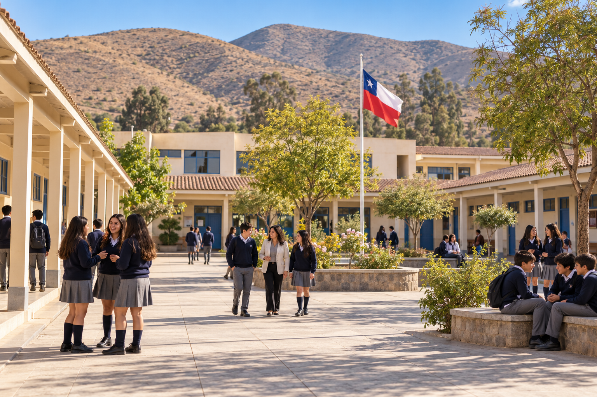

Imagen creada con IA · Escuela referencial inspirada en Illapel
01 / COMUNIDADES EDUCATIVASRenhacer
Educativo
Cursos, capacitaciones y asesorías para fortalecer la convivencia y la gestión de tu institución.
FormaciónRICE y protocolosConvivencia
Conocer el área educativa